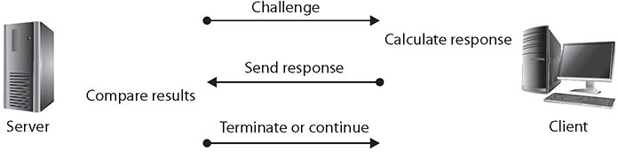
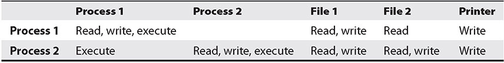
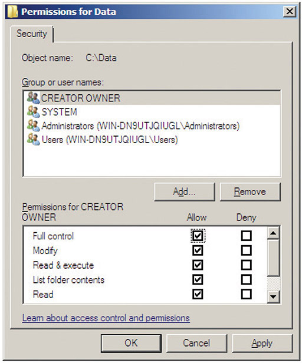
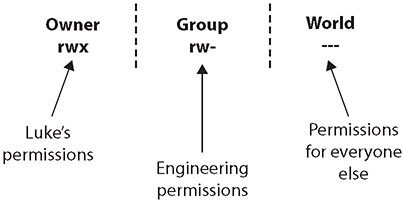

Table of Contents for
CompTIA Security+ All-in-One Exam Guide, Sixth Edition (Exam SY0-601)), 6th Edition
- Cover (01:09 mins)
- Title Page (01:09 mins)
- Copyright Page (03:27 mins)
- Dedication (01:09 mins)
- About the Authors (04:36 mins)
- Contents (19:33 mins)
- Preface (02:18 mins)
- Acknowledgments (01:09 mins)
- Introduction (12:39 mins)
-
Part I Threats, Attacks, and Vulnerabilities (01:09 mins)
- Chapter 1 Social Engineering Techniques (35:39 mins)
- Chapter 2 Type of Attack Indicators (37:57 mins)
- Chapter 3 Application Attack Indicators (33:21 mins)
- Chapter 4 Network Attack Indicators (39:06 mins)
- Chapter 5 Threat Actors, Vectors, and Intelligence Sources (44:51 mins)
- Chapter 6 Vulnerabilities (31:03 mins)
- Chapter 7 Security Assessments (23:00 mins)
- Chapter 8 Penetration Testing (25:18 mins)
-
Part II Architecture and Design (01:09 mins)
- Chapter 9 Enterprise Security Architecture (26:27 mins)
- Chapter 10 Virtualization and Cloud Security (25:18 mins)
- Chapter 11 Secure Application Development, Deployment, and Automation Concepts (27:36 mins)
- Chapter 12 Authentication and Authorization (33:21 mins)
- Chapter 13 Cybersecurity Resilience (39:06 mins)
- Chapter 14 Embedded and Specialized Systems (41:24 mins)
- Chapter 15 Physical Security Controls (49:27 mins)
- Chapter 16 Cryptographic Concepts (42:33 mins)
-
Part III Implementation (01:09 mins)
- Chapter 17 Secure Protocols (20:42 mins)
- Chapter 18 Host and Application Security (46:00 mins)
- Chapter 19 Secure Network Design (67:51 mins)
- Chapter 20 Wireless Security (25:18 mins)
- Chapter 21 Secure Mobile Solutions (43:42 mins)
- Chapter 22 Implementing Cloud Security (24:09 mins)
- Chapter 23 Identity and Account Management Controls (33:21 mins)
- Chapter 24 Implement Authentication and Authorization (37:57 mins)
- Chapter 25 Public Key Infrastructure (55:12 mins)
- Part IV Operations and Incident Response (01:09 mins)
- Part V Governance, Risk, and Compliance (01:09 mins)
- Part VI Appendixes and Glossary (01:09 mins)
- Glossary (65:33 mins)
- Index (67:51 mins)
CHAPTER 24
Implement Authentication and Authorization
In this chapter, you will
• Examine authentication management concepts
• Explore different authentication methods
• Examine different access control schemes
Authentication and authorization are important to control who has access to computer systems and resources. Principles of controlling access and properly authenticating apply to both internal access and remote access. Remote access requirements are more rigorous, but the same principles can be applied to internal access.
Access control mechanisms work together with accounts and account policies to determine the proper level of access for users on systems. The chapter will examine authentication management, authentication methods, and access control schemes.
Certification Objective This chapter covers CompTIA Security+ exam objective 3.8: Given a scenario, implement authentication and authorization solutions.
Authentication Management
Authentication is one of the foundational elements of establishing and maintaining security. Authentication management is achieved through a combination of hardware and software elements, including passwords, password keys, vaults, Trusted Platform Module (TPM) and hardware security module (HSM) solutions, as well as alternative authentication methods such as knowledge-based systems.
Password Keys
Passwords represent a secret between a user and an authentication system. One of the challenges in maintaining passwords is for a user to have a system that maintains passwords, as secrets, and does so securely. The usual method involves managing the group of passwords collectively via a password manager solution, which encrypts the passwords with a key. This password key represents the access pathway to the passwords and changes the myriad of different passwords, which can be unique for every site or use, into a single secret represented by the password key. The user maintains the secrecy of the password key, and the password manager manages the other passwords.
Password Vaults
Password vaults are software mechanisms designed to manage the problem of users having multiple passwords for the myriad of different systems. Vaults provide a means of storing the passwords until they are needed, and many password manager programs include additional functionality such as password generation and password handling via a browser. Vaults do represent a single point of failure in that if an attacker gets the password key, or master password, they have access to all of the user’s passwords. Cryptographic protections should remedy this, but it also introduces another issue with vaults—what to do when the user losses their master password. Any recovery mechanism would represent a major risk for the system, so in most systems it is incumbent on the user to maintain this information somewhere else as a backup.
Another form of password vaults is the systems built into software and operating systems (OSs) to securely hold credentials. Examples of these are the Keychain in macOS and iOS and the Credential Manager in Microsoft Windows. The use of browser-based password storage is much less secure, as numerous utilities exist that can get the passwords out of most of them, making these solutions less secure and an obvious target for attackers. The OS-based Keychain and Credential Manager solutions are much more robust and can limit overall risk.
TPM
The Trusted Platform Module (TPM) is a hardware solution on the motherboard, one that assists with key generation and storage as well as random number generation. When the encryption keys are stored in the TPM, they are not accessible via normal software channels and are physically separated from the hard drive or other encrypted data locations. This makes the TPM a more secure solution than keeping the keys in the machine’s normal storage.

EXAM TIP A TPM acts as a secure cryptoprocessor. It is a hardware solution that assists with key generation and secure, encrypted storage.
HSM
A hardware security module (HSM) is a device used to manage or store encryption keys. It can also assist in cryptographic operations such as encryption, hashing, or the application of digital signatures. HSMs typically are peripheral devices connected via USB or a network connection. HSMs have tamper-protection mechanisms to prevent physical access to the secrets they protect. Because of their dedicated design, they can offer significant performance advantages over general-purpose computers when it comes to cryptographic operations. When an enterprise has significant levels of cryptographic operations, HSMs can provide throughput efficiencies.
EXAM TIP Storing private keys anywhere on a networked system is a recipe for loss. HSMs are designed to allow the use of keys without exposing them to the wide range of host-based threats.
Knowledge-based Authentication
Knowledge-based authentication is a method where the identity of a user is verified via a common set of knowledge. This is a very useful method for verifying the identity of a user without having a stored secret in advance. The standard methodology associated with authentication is an identity and a common secret that are previously recorded in a system, and then upon later use verified by recall on the user’s part and lookup by the system. But what if the user has never accessed the site to establish their identity? How can it be established on the fly, so to speak? Knowledge-based authentication relies on a set of knowledge that, while it may be available to many, is from such a vast set of information that the recall only will work for the user themselves.
A good example is when accessing a site such as a credit bureau to obtain information on yourself. The site has a vast array of knowledge associated with you, and it can see if you can identify an address you have lived at (out of a list of four addresses), a car you owned (out of a list of four cars), a car or mortgage payment amount, or a credit card account. In a timed quiz, to eliminate extensive lookups, the user is presented with a series of multiple-choice options. If they get them all correct, then odds are that they are the person they represent themselves to be. The last time the author went through one of these tests, the range of time for the knowledge covered was greater than 20 years, making the breadth of knowledge to choose from large indeed.
Authentication
Authentication protocols are the standardized methods used to provide authentication services, and in the case of wireless networks, these are provided remotely. Wireless networks have a need for secure authentication protocols. The following sections cover several key authentication protocols and methods in use today.
EAP
The Extensible Authentication Protocol (EAP) is a protocol for wireless networks that expands on authentication methods used by the Point-to-Point Protocol (PPP). PPP is a protocol that was commonly used to directly connect devices to each other. EAP is designed to support multiple authentication mechanisms, including tokens, smart cards, certificates, one-time passwords, and public key encryption authentication. EAP has been expanded into multiple versions, some of which are covered in the following sections. EAP is defined in RFC 2284 (obsoleted by 3748).
PEAP, or Protected EAP, was developed to protect the EAP communication by encapsulating it with Transport Layer Security (TLS). This is an open standard developed jointly by Cisco, Microsoft, and RSA. EAP was designed assuming a secure communication channel. PEAP provides that protection as part of the protocol via a TLS tunnel. PEAP is widely supported by vendors for use over wireless networks.
The Wi-Fi Alliance added EAP-FAST to its list of supported protocols for WPA/WPA2 in 2010, and to WPA3 in 2018. EAP-FAST (EAP Flexible Authentication via Secure Tunneling) is described in RFC 4851 and proposed by Cisco to be a replacement for LEAP, a previous Cisco version of EAP. It offers a lightweight tunneling protocol to enable authentication. The distinguishing characteristic is the passing of a Protected Access Credential (PAC) that is used to establish a TLS tunnel through which client credentials are verified. The Wi-Fi Alliance also added EAP-TLS to its list of supported protocols for WPA/WPA2 in 2010, and WPA3 was added in 2018. EAP-TLS is an IETF open standard (RFC 5216) that uses the TLS protocol to secure the authentication process. EAP-TLS relies on TLS, an attempt to standardize the SSL structure to pass credentials. This is still considered one of the most secure implementations, primarily because common implementations employ client-side certificates. This means that an attacker must also possess the key for the client-side certificate to break the TLS channel.
The Wi-Fi Alliance also added EAP-TTLS to its list of supported protocols for WPA/WPA2 in 2010, and WPA3 in 2018. EAP-TTLS (the acronym stands for EAP–Tunneled TLS protocol) is a variant of the EAP-TLS protocol. EAP-TTLS works much the same way as EAP-TLS, with the server authenticating to the client with a certificate, but the protocol tunnels the client side of the authentication, allowing the use of legacy authentication protocols such as Password Authentication Protocol (PAP), Challenge-Handshake Authentication Protocol (CHAP), MS-CHAP, and MS-CHAP-V2. In EAP-TTLS, the authentication process is protected by the tunnel from man-in-the-middle attacks, and although client-side certificates can be used, they are not required, making this easier to set up than EAP-TLS to clients without certificates.

NOTE WPA3 was released by the Wi-Fi Alliance in 2018, and it specifically is designed to address WPA2 weaknesses, while still allowing older methods. Per the WPA3 specification, a WPA3 station shall perform server certificate validation when using EAP-TTLS, EAP-TLS, EAP-PEAPv0 or EAP-PEAPv1 EAP methods.
EXAM TIP There are two key elements concerning EAP. First, it is only a framework to secure the authentication process. Second, it can support multiple methods and itself is not an actual encryption method.
Challenge-Handshake Authentication Protocol (CHAP)
Challenge-Handshake Authentication Protocol (CHAP) is used to provide authentication across a point-to-point link using PPP. In this protocol, authentication after the link has been established is not mandatory. CHAP is designed to provide authentication periodically through the use of a challenge/response system sometimes described as a three-way handshake, as illustrated in Figure 24-1. The initial challenge (a randomly generated number) is sent to the client. The client uses a one-way hashing function to calculate what the response should be and then sends this back. The server compares the response to what it calculated the response should be. If they match, communication continues. If the two values don’t match, then the connection is terminated. This mechanism relies on a shared secret between the two entities so that the correct values can be calculated.

Figure 24-1 The CHAP challenge/response sequence
EXAM TIP CHAP uses PPP, which supports three functions:
—Encapsulate datagrams across serial links
—Establish, configure, and test links using LCP (Link Control Protocol)
—Establish and configure different network protocols using NCP (Network Control Protocol)
PPP supports two authentication protocols:
—Password Authentication Protocol (PAP)
—Challenge-Handshake Authentication Protocol (CHAP)
Password Authentication Protocol (PAP)
Password Authentication Protocol (PAP) authentication involves a two-way handshake in which the username and password are sent across the link in clear text. PAP authentication does not provide any protection against playback and line sniffing. PAP is now a deprecated standard.
EXAM TIP PAP is a cleartext authentication protocol and hence is subject to interception. CHAP uses a challenge/response handshake protocol to secure the channel.
802.1X
802.1X is an authentication standard that supports port-based authentication services between a user and an authorization device, such as an edge router. 802.1X is commonly used on wireless access points as a port-based authentication service prior to admission to the wireless network. 802.1X over wireless uses either 802.11i or an EAP-based protocol, such as EAP-TLS or PEAP-TLS.
RADIUS
Remote Authentication Dial-In User Service (RADIUS) is a protocol that was developed as an AAA protocol. It was submitted to the IETF as a series of RFCs: RFC 2058 (RADIUS specification), RFC 2059 (RADIUS accounting standard), and updated RFCs 2865–2869 and 3579 are now standard protocols. The IETF AAA Working Group has proposed extensions to RADIUS (RFC 2882) and a replacement protocol called Diameter (RFC 7075).
RADIUS is designed as a connectionless protocol utilizing User Datagram Protocol (UDP) as its transport-level protocol. Connection-type issues, such as timeouts, are handled by the RADIUS application instead of the transport layer. RADIUS utilizes UDP ports 1812 for authentication and authorization and 1813 for accounting functions.
RADIUS is a client/server protocol. The RADIUS client is typically a network access server (NAS). The RADIUS server is a process or daemon running on a Linux or Windows Server machine. Communications between a RADIUS client and RADIUS server are encrypted using a shared secret that is manually configured into each entity and not shared over a connection. Hence, communications between a RADIUS client (typically a NAS) and a RADIUS server are secure, but the communications between a user (typically a PC) and the RADIUS client are subject to compromise. This is important to note because if the user’s machine (the PC) is not the RADIUS client (the NAS), then communications between the PC and the NAS are typically not encrypted and are passed in the clear.
EXAM TIP Using UDP transport to a centralized network access server, RADIUS provides client systems with authentication and access control within an enterprise network.
Single Sign-On (SSO)
Single sign-on (SSO) is a form of authentication that involves the transferring of credentials between systems. As more and more systems are combined in daily use, users are forced to have multiple sets of credentials. A user may have to log in to three, four, five, or even more systems every day just to do her job. Single sign-on allows a user to transfer her credentials so that logging in to one system acts to log her in to all of them. This has the advantage of reducing login hassles for the user. It also has the disadvantage of combining the authentication systems in such a way that if one login is compromised, then all of the user’s logins are compromised.
Security Assertion Markup Language (SAML)
Security Assertion Markup Language (SAML) is a single sign-on capability used for web applications to ensure user identities can be shared and are protected. It defines standards for exchanging authentication and authorization data between security domains. It is becoming increasingly important with cloud-based solutions and with Software as a Service (SaaS) applications, as it ensures interoperability across identity providers.
SAML is an XML-based protocol that uses security tokens and assertions to pass information about a “principal” (typically an end user) to a SAML authority (an “identity provider” or IdP) and the service provider (SP). The principal requests a service from the SP, which then requests and obtains an identity assertion from the IdP. The SP can then grant access or perform the requested service for the principal.
EXAM TIP By allowing identity providers to pass on credentials to service providers, SAML allows you log in to many different websites using one set of credentials.
Terminal Access Controller Access Control System Plus (TACACS+)
The Terminal Access Controller Access Control System Plus (TACACS+) protocol is the current generation of the TACACS family. TACACS+ has extended attribute control and accounting processes.
One of the fundamental design aspects is the separation of authentication, authorization, and accounting in this protocol. Although there is a straightforward lineage of these protocols from the original TACACS, TACACS+ is a major revision and is not backward compatible with previous versions of the protocol series.
TACACS+ uses TCP as its transport protocol, typically operating over TCP port 49. This port is used for the login process. Both UDP and TCP port 49 are reserved for the TACACS+ login host protocol.
TACACS+ is a client/server protocol, with the client typically being a network access server (NAS) and the server being a daemon process on a UNIX, Linux, or Windows server. This is important to note because if the user’s machine (usually a PC) is not the client (usually a NAS), then communications between the PC and NAS are typically not encrypted and are passed in the clear. Communications between a TACACS+ client and TACACS+ server are encrypted using a shared secret that is manually configured into each entity and is not shared over a connection. Hence, communications between a TACACS+ client (typically a NAS) and a TACACS+ server are secure, but the communications between a user (typically a PC) and the TACACS+ client are subject to compromise.
EXAM TIP TACACS+ is a protocol that takes a client/server model approach and handles authentication, authorization, and accounting (AAA) services. It is similar to RADIUS but uses TCP (port 49) as a transport method.
OAuth
OAuth (Open Authorization) is an open protocol that allows secure, token-based authorization on the Internet from web, mobile, and desktop applications via a simple and standard method. OAuth is used by companies such as Google, Facebook, Microsoft, and Twitter to permit users to share information about their accounts with third-party applications or websites. OAuth 1.0 was developed by a Twitter engineer as part of the Twitter OpenID implementation. OAuth 2.0 (not backward compatible) has taken off with support from most major web platforms. OAuth’s main strength is that it can be used by an external partner site to allow access to protected data without having to re-authenticate the user.
OAuth was created to remove the need for users to share their passwords with third-party applications, instead substituting a token. OAuth 2.0 expanded this into also providing authentication services, so it can eliminate the need for OpenID.
OpenID
OpenID is a simple identity layer on top of the OAuth 2.0 protocol, just discussed. OpenID allows clients of all types, including mobile, JavaScript, and web-based clients, to request and receive information about authenticated sessions and end users. OpenID is intended to make the process of proving who you are easier, the first step in the authentication–authorization ladder. To do authorization, a second process is needed, and OpenID is commonly paired with OAuth 2.0. OpenID was created for federated authentication that lets a third party, such as Google or Facebook, authenticate your users for you, by using accounts that the users already have.
EXAM TIP OpenID and OAuth are typically used together, yet have different purposes. OpenID is used for authentication, whereas OAuth is used for authorization.
Kerberos
Developed as part of MIT’s project Athena, Kerberos is a network authentication protocol designed for a client/server environment. The current release at the time of writing is Kerberos version 5, release 1.18.5, which is supported by all major operating systems. Kerberos securely passes a symmetric key over an insecure network using the Needham-Schroeder symmetric key protocol. Kerberos is built around the idea of a trusted third party, termed a key distribution center (KDC), which consists of two logically separate parts: an authentication server (AS) and a ticket-granting server (TGS). Kerberos communicates via “tickets” that serve to prove the identity of users.
Taking its name from the three-headed dog of Greek mythology, Kerberos is designed to work across the Internet, an inherently insecure environment. Kerberos uses strong encryption so that a client can prove its identity to a server, and the server can in turn authenticate itself to the client. A complete Kerberos environment is referred to as a Kerberos realm. The Kerberos server contains user IDs and hashed passwords for all users that will have authorizations to realm services. The Kerberos server also has shared secret keys with every server to which it will grant access tickets.
The basis for authentication in a Kerberos environment is the ticket. Tickets are used in a two-step process with the client. The first ticket is a ticket-granting ticket (TGT) issued by the AS to a requesting client. The client can then present this ticket to the Kerberos server with a request for a ticket to access a specific server. This client-to-server ticket is used to gain access to a server’s service in the realm. Since the entire session can be encrypted, this will eliminate the inherently insecure transmission of items such as a password that can be intercepted on the network. Tickets are timestamped and have a lifetime, so attempting to reuse a ticket will not be successful.
The steps involved in Kerberos authentication are as follows:
1. The user presents credentials and requests a ticket from the Key Distribution Server (KDS).
2. The KDS verifies credentials and issues a TGT.
3. The user presents a TGT and request for service to the KDS.
4. The KDS verifies authorization and issues a client-to-server ticket.
5. The user presents a request and a client-to-server ticket to the desired service.
6. If the client-to-server ticket is valid, service is granted to the client.
To illustrate how the Kerberos authentication service works, think about the common driver’s license. You have received a license that you can present to other entities to prove you are who you claim to be. Because other entities trust the state in which the license was issued, they will accept your license as proof of your identity. The state in which the license was issued is analogous to the Kerberos authentication service realm, and the license acts as a client-to-server ticket. It is the trusted entity both sides rely on to provide valid identifications. This analogy is not perfect, because we all probably have heard of individuals who obtained a phony driver’s license, but it serves to illustrate the basic idea behind Kerberos.
EXAM TIP Kerberos is a third-party authentication service that uses a series of tickets as tokens for authenticating users. The steps involved are protected using strong cryptography.
Access Control Schemes
The term access control describes a variety of protection schemes. It sometimes refers to all security features used to prevent unauthorized access to a computer system or network. In this sense, it may be confused with authentication. More properly, access is the ability of a subject (such as an individual or a process running on a computer system) to interact with an object (such as a file or hardware device). Authentication, on the other hand, deals with verifying the identity of a subject.
To understand the difference, consider the example of an individual attempting to log in to a computer system or network. Authentication is the process used to verify to the computer system or network that the individual is who he claims to be. The most common method to do this is through the use of a user ID and password. Once the individual has verified his identity, access controls regulate what the individual can actually do on the system—just because a person is granted entry to the system does not mean that he should have access to all data the system contains.
Consider another example. When you go to your bank to make a withdrawal, the teller at the window will verify that you are indeed who you claim to be by asking you to provide some form of identification with your picture on it, such as your driver’s license. You might also have to provide your bank account number. Once the teller verifies your identity, you will have proved that you are a valid (authorized) customer of this bank. This does not, however, mean that you have the ability to view all information that the bank protects—such as your neighbor’s account balance. The teller will control what information, and funds, you can access and will grant you access only to the information that you are authorized to see. In this example, your identification and bank account number serve as your method of authentication and the teller serves as the access control mechanism.
In computer systems and networks, access controls can be implemented in several ways. An access control matrix provides the simplest framework for illustrating the process and is shown in Table 24-1. In this matrix, the system is keeping track of two processes, two files, and one hardware device. Process 1 can read both File 1 and File 2 but can write only to File 1. Process 1 cannot access Process 2, but Process 2 can execute Process 1. Both processes have the ability to write to the printer.

Table 24-1 An Access Control Matrix
While simple to understand, the access control matrix is seldom used in computer systems because it is extremely costly in terms of storage space and processing. Imagine the size of an access control matrix for a large network with hundreds of users and thousands of files. The actual mechanics of how access controls are implemented in a system varies, though access control lists (ACLs) are common. An ACL is nothing more than a list that contains the subjects that have access rights to a particular object. The list identifies not only the subject but the specific access granted to the subject for the object. Typical types of access include read, write, and execute, as indicated in the sample access control matrix.
No matter what specific mechanism is used to implement access controls in a computer system or network, the controls should be based on a specific model of access. Several different models are discussed in security literature and listed under exam objective 3.8, including attribute-based access control (ABAC), role-based access control (RBAC), rule-based access control (also RBAC), mandatory access control (MAC), and discretionary access control (DAC).
Attribute-Based Access Control (ABAC)
Attribute-based access control (ABAC) is a form of access control based on attributes. These attributes can be in a wide variety of forms, such as user attributes, resource or object attributes, and environmental attributes. For instance, a doctor can access medical records, but only for patients to which she is assigned, or only when she is on shift. The major difference between ABAC and role-based access control (discussed next) is the ability to include Boolean logic in the access control decision.
EXAM TIP The ABAC process of authorization evaluates specific rules and policies against attributes associated with a subject or object. ABAC is often used in large enterprises that use a federated structure. It is somewhat more complicated and costly to implement than other access control models.
Role-Based Access Control
ACLs can be cumbersome and can take time to administer properly. Another access control mechanism that has been attracting increased attention is role-based access control (RBAC). In this scheme, instead of each user being assigned specific access permissions for the objects associated with the computer system or network, each user is assigned a set of roles that he or she may perform. The roles are in turn assigned the access permissions necessary to perform the tasks associated with those roles. Users will thus be granted permissions to objects in terms of the specific duties they must perform—not according to a security classification associated with individual objects.
Rule-Based Access Control
The first thing you might notice is the ambiguity introduced with this access control method also using the acronym RBAC. Rule-based access control also uses objects such as ACLs to help determine whether or not access should be granted. In this case, a series of rules is contained in the ACL, and the determination of whether to grant access will be made based on these rules. An example of such a rule is one that states that no employee may have access to the payroll file after hours or on weekends. As with MAC (discussed next), users are not allowed to change the access rules, and administrators are relied on for this. Rule-based access control can actually be used in addition to or as a method of implementing other access control methods. For example, MAC methods can utilize a rule-based approach for implementation.
EXAM TIP Do not become confused between rule-based and role-based access controls, even though they both have the same acronym. The name of each is descriptive of what it entails and will help you distinguish between them.
MAC
A less frequently employed system for restricting access is mandatory access control (MAC). This system, generally used only in environments in which different levels of security classifications exist, is much more restrictive regarding what a user is allowed to do. As defined by the “Orange Book,” a Department of Defense (DoD) document that at one time was the standard for describing what constituted a trusted computing system, a mandatory access control is “a means of restricting access to objects based on the sensitivity (as represented by a label) of the information contained in the objects and the formal authorization (i.e., clearance) of subjects to access information of such sensitivity.” In this case, the owner or subject can’t determine whether access is to be granted to another subject; it is the job of the operating system to decide.
EXAM TIP Common information classifications include High, Medium, Low, Confidential, Private, and Public.
In MAC, the security mechanism controls access to all objects, and individual subjects cannot change that access. The key here is the label attached to every subject and object. The label will identify the level of classification for that object and the level to which the subject is entitled. Think of military security classifications such as Secret and Top Secret. A file that has been identified as Top Secret (has a label indicating that it is Top Secret) may be viewed only by individuals with a Top Secret clearance. It is up to the access control mechanism to ensure that an individual with only a Secret clearance never gains access to a file labeled as Top Secret. Similarly, a user cleared for Top Secret access will not be allowed by the access control mechanism to change the classification of a file labeled as Top Secret to Secret or to send that Top Secret file to a user cleared only for Secret information. The complexity of such a mechanism can be further understood when you consider today’s windowing environment. The access control mechanism will not allow a user to cut a portion of a Top Secret document and paste it into a window containing a document with only a Secret label. It is this separation of differing levels of classified information that results in this sort of mechanism being referred to as multilevel security.
Finally, just because a subject has the appropriate level of clearance to view a document does not mean that she will be allowed to do so. The concept of least privilege, sometimes called “need to know,” which is a DAC concept (discussed next), also exists in MAC mechanisms. Least privilege means that a person is given access only to information that she needs in order to accomplish her job or mission.
Discretionary Access Control (DAC)
Both discretionary access control (DAC) and mandatory access control are terms originally used by the military to describe two different approaches to controlling an individual’s access to a system. Per the “Orange Book,” DACs are “a means of restricting access to objects based on the identity of subjects and/or groups to which they belong. The controls are discretionary in the sense that a subject with a certain access permission is capable of passing that permission (perhaps indirectly) on to any other subject.” While this might appear to be confusing “government-speak,” the principle is rather simple. In systems that employ DACs, the owner of an object can decide which other subjects can have access to the object and what specific access they can have. One common method to accomplish this is the permission bits used in Linux-based systems. The owner of a file can specify what permissions (read/write/execute) members in the same group can have and also what permissions all others can have. ACLs are also a common mechanism used to implement DAC.
EXAM TIP If you are trying to remember the difference between MAC and DAC, just remember that MAC is associated with multilevel security labels such as Top Secret and Secret, whereas DAC uses ACLs.
Conditional Access
Conditional access is an access control scheme where specific conditions are examined before access is given. A condition could be the user location when accessing resources: if local, then grant access; if remote, then deny access. The list of conditions can be broad and follows this general form:
If { condition } then { action }
Some examples follow:
• If { client is using legacy authentication } then { block access }
• If { device is not compliant } then { block access }
• If { user is an admin } then { enable multifactor authentication }
Conditional access can be very useful when an entity has a wide array of different systems with differing access needs.
Privileged Access Management
Privileged accounts are any accounts with greater-than-normal user access. Privileged accounts are typically root- or administrative-level accounts and represent risk in that they are unlimited in their powers. These accounts require regular real-time monitoring, if at all possible, and should always be monitored when operating remotely. Administrators may need to perform tasks via a remote session in certain scenarios, but when they do, they first need to identify the purpose and get approval.
Privileged access management is a combination of the policies, procedures, and technologies for controlling access to and use of elevated or privileged accounts. This enables the organization to log and control privileged access across the entire environment. The primary purpose is to limit the attack surface that these accounts have, and to minimize exposure based on current operational needs and conditions.
File System Permissions
Files need security on systems, to prevent unauthorized access and unauthorized alterations. File system security is the set of mechanisms and processes employed to ensure this critical function. Using a connection of file storage mechanisms, along with access control lists and access control models, provides a means by which this can be done. You need a file system capable of supporting user-level access differentiation—something NTFS does but FAT32 does not. Next, you need to have a functioning access control model—MAC, DAC, ABAC, or other, as previously described in this chapter. Then you need a system to apply the users’ permissions to the files, which can be handled by the OS, although administering and maintaining this can be a challenge.
If multiple users share a computer system, the system administrator likely needs to control who is allowed to do what when it comes to viewing, using, or changing system resources. Although operating systems vary in how they implement these types of controls, most operating systems use the concepts of permissions and rights to control and safeguard access to resources. Permissions control what a user is allowed to do with objects on a system, and rights define the actions a user can perform on the system itself. Let’s examine how the Windows operating systems implement this concept.
The Windows operating systems use the concepts of permissions and rights to control access to files, folders, and information resources. When using the NTFS file system, administrators can grant users and groups permission to perform certain tasks as they relate to files, folders, and Registry keys. The basic categories of NTFS permissions are as follows:
EXAM TIP Permissions can be applied to a specific user or group to control that user or group’s ability to view, modify, access, use, or delete resources such as folders and files.
• Full Control A user/group can change permissions on the folder/file, take ownership if someone else owns the folder/file, delete subfolders and files, and perform actions permitted by all other NTFS folder permissions.
• Modify A user/group can view and modify files/folders and their properties, can delete and add files/folders, and can delete properties from or add properties to a file/folder.
• Read & Execute A user/group can view the file/folder and can execute scripts and executables, but they cannot make any changes (files/folders are read-only).
• List Folder Contents A user/group can list only what is inside the folder (applies to folders only).
• Read A user/group can view the contents of the file/folder and the file/folder properties.
• Write A user/group can write to the file or folder.
Figure 24-2 shows the permissions on a folder called Data from a Windows Server system. In the top half of the Permissions window are the users and groups that have permissions for this folder. In the bottom half of the window are the permissions assigned to the highlighted user or group.

Figure 24-2 Permissions for the Data folder
Under UNIX operating systems, file permissions consist of three distinct parts:
• Owner permissions (read, write, and execute) The owner of the file
• Group permissions (read, write, and execute) The group to which the owner of the file belongs
• World permissions (read, write, and execute) Anyone else who is not the owner and does not belong to the group to which the owner of the file belongs
EXAM TIP Discretionary access control restricts access based on the user’s identity or group membership.
For example, suppose a file called secretdata has been created by the owner of the file, Luke, who is part of the Engineering group. The owner permissions on the file would reflect Luke’s access to the file (as the owner). The group permissions would reflect the access granted to anyone who is part of the Engineering group. The world permissions would represent the access granted to anyone who is not Luke and is not part of the Engineering group.
In Linux, a file’s permissions are usually displayed as a series of nine characters, with the first three characters representing the owner’s permissions, the second three characters representing the group permissions, and the last three characters representing the permissions for everyone else (that is, for the world). This concept is illustrated in Figure 24-3.

Figure 24-3 Discretionary file permissions in the UNIX environment
Suppose the file secretdata is owned by Luke with group permissions for Engineering (because Luke is part of the Engineering group), and the permissions on that file are rwx, rw-, and ---, as shown in Figure 24-3. This would mean the following:
• Luke can read, write, and execute the file (rwx).
• Members of the Engineering group can read and write the file but not execute it (rw-).
• The world has no access to the file and can’t read, write, or execute it (---).
Remember that under the DAC model, the file’s owner, Luke, can change the file’s permissions any time he wants.
Chapter Review
In this chapter, you became acquainted with how to implement authentication and authorization solutions. The chapter opened with an examination of authentication management, including password keys, password vaults, TPM and HSM solutions, and knowledge-based authentication.
The next section covered forms of authentication solutions, starting with the EAP, CHAP, and PAP protocols. Then it moved into IEEE 802.1X, RADIUS, and single sign-on solutions. A description of Security Assertion Markup Language (SAML) was the next item covered, followed by a discussion of Terminal Access Controller/Access Control System Plus (TACACS+). The methods of OAuth and OpenID were discussed next, and the section closed with a discussion of Kerberos.
The last section of the chapter covered access control schemes. It opened with a discussion of attribute-based access control (ABAC), role-based access control (RBAC), rule-based access control (also RBAC), mandatory access control (MAC), and discretionary access control (DAC). The section closed with a discussion of conditional access control, privilege access management, and file system permissions.
Questions
To help you prepare further for the CompTIA Security+ exam, and to test your level of preparedness, answer the following questions and then check your answers against the correct answers at the end of the chapter.
1. Your organization needs a system for restricting access to files based on the sensitivity of the information in those files. You might suggest which of the following access control systems?
A. Discretionary access control
B. Mandatory access control
C. Confidential access control
D. File-based access control
2. Which of the following describes a major difference between NTFS and FAT32 file systems?
A. NTFS supports user-level access differentiation.
B. FAT32 supports group-level access differentiation.
C. FAT32 natively encrypts files and directories.
D. NTFS logs all file access using secure tokens.
3. Your organization has grown too large to support assigning permissions to users individually. Within your organization, you have large groups of users who perform the same duties and need the same type and level of access to the same files. Rather than assigning individual permissions, your organization may wish to consider using which of the following access control methods?
A. Group-based access control
B. Shift-based access control
C. Role-based access control
D. File-based access control
4. A ticket-granting server is an important element in which of the following authentication models?
A. 802.1X
B. RADIUS
C. TACACS+
D. Kerberos
5. Which of the following is an open standard that uses security tokens and assertions and allows you to access multiple websites with one set of credentials?
A. PAP
B. CHAP
C. SSO
D. SAML
6. What protocol is used for RADIUS?
A. UDP
B. NetBIOS
C. TCP
D. Proprietary
7. What are accounts with greater than “normal” user access called?
A. Privileged accounts
B. System accounts
C. Superuser accounts
D. Audit accounts
8. You have to implement an OpenID solution. What is the typical relationship with existing systems?
A. OpenID is used for authentication, OAuth is used for authorization.
B. OpenID is used for authorization, OAuth is used for authentication.
C. OpenID is not compatible with OAuth.
D. OpenID only works with Kerberos.
9. You wish to create an access control scheme that enables the CFO to access financial data from his machine, but not from the machine in the reception area of the lobby. Which access control model is best suited for this?
A. Role-based access control
B. Conditional access control
C. Mandatory access control
D. Discretionary access control
10. You need to design an authentication system where users who have never connected to the system can be identified and authenticated in a single process. Which is the best solution?
A. RADIUS
B. Password vault-based authentication
C. TPM-based authentication
D. Knowledge-based authentication
Answers
1. B. Mandatory access control (MAC) is a system used in environments with different levels of security classifications. Access to objects (like files) is based on the sensitivity of the information contained in those objects and the authorization of the user to access information with that level of sensitivity.
2. A. NTFS supports user-level access differentiation and allows you to assign user permissions to files and folders.
3. C. Your organization could consider role-based access control. In role-based access control, instead of each user being assigned specific access permissions for the objects associated with the computer system or network, each user is assigned a set of roles that he or she may perform. The roles are in turn assigned the access permissions necessary to perform the tasks associated with the roles. Users will thus be granted permissions to objects in terms of the specific duties they must perform—not according to a security classification associated with individual objects.
4. D. Kerberos uses ticket-granting servers to manage the issuance of tickets granting various permissions on the system.
5. D. SAML is an XML-based protocol that uses security tokens and assertions to pass information about a “principal” (typically an end user) to a SAML authority (an “identity provider” or IdP) and the service provider (SP). In simpler terms, by allowing identity providers to pass on credentials to service providers, SAML allows you can log in to many different websites using one set of credentials.
6. A. RADIUS has been officially assigned UDP port 1812 for RADIUS authentication and port 1813 for RADIUS accounting by the Internet Assigned Numbers Authority (IANA). However, previously, ports 1645 (authentication) and 1646 (accounting) were used unofficially and became the default ports assigned by many RADIUS client/server implementations of the time. The tradition of using 1645 and 1646 for backward compatibility continues to this day. For this reason, many RADIUS server implementations monitor both sets of UDP ports for RADIUS requests. Microsoft RADIUS servers default to 1812 and 1813, but Cisco devices default to the traditional 1645 and 1646 ports.
7. A. Privileged accounts are any accounts with greater-than-normal user access. Privileged accounts are typically root- or admin-level accounts and represent risk in that they are unlimited in their powers.
8. A. Typically OpenID is used for authentication, and OAuth is used for authorization.
9. B. Conditional access control models allow differing access control schemes based on specific conditions beyond just user account.
10. D. Knowledge-based authentication schemes allow the authentication of users who have not previously established their identity via a combined identification and authentication methodology.